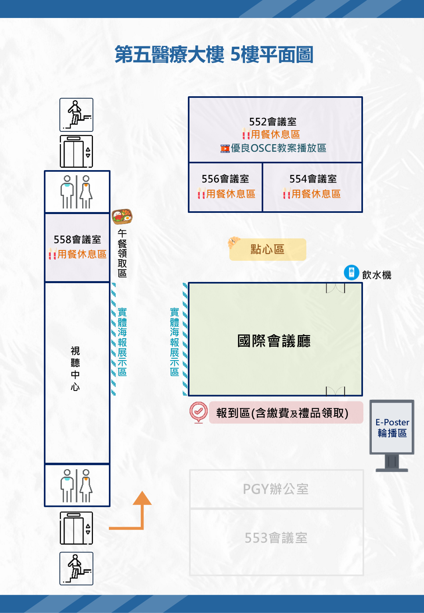

| 時間 | 主題 | 講師 | 座長 |
|---|---|---|---|
| 08:00 – 08:30 | 報到 | ||
| 08:30 – 08:40 | 開幕致詞 | ||
| 08:40 – 09:20 | 當壓力成為日常：醫療現場的心理韌性練習 📄 課程講義 | 蘇益賢 臨床心理師 初色心理治療所 |
蘇慧真 理事長 奇美醫院藥劑部部長 兼代理教學部部長 |
| 09:20 – 09:40 | 茶敘與交流 | ||
| 09:40 – 10:20 | 能力導向醫學教育中的教學設計：從課程架構到臨床實踐 📄 課程講義 | 楊浚銘 常務理事 奇美醫院 神經內科主任 |
|
| 10:20 – 11:00 | 事半功倍的教學：AI 工具在教案製作的應用 📄 課程講義 | 江惠英 常務理事 奇美醫院 護理部副部長 |
|
| 11:00 – 12:00 | 第五屆第 1 次會員大會暨第五屆理監事選舉 | ||
| 12:00 – 13:30 | 午餐休息（會員備有餐盒） 12:30 – 13:30 入選海報論文觀賞及評選 |
||
| 13:30 – 14:10 | 從評量到信賴：OSCE、EPA 與 CCC 連結臨床能力培育與總結性能力評定 📄 課程講義 | 鄭奕帝 理事 中國醫藥大學附設醫院 藥劑部主任 |
|
| 14:10 – 14:30 | 茶敘與交流 | ||
| 14:30 – 15:10 | 在高壓醫療環境中，如何系統性支持臨床教師的學術發展 📄 課程講義 | 郭進榮 名譽理事長 奇美醫院 教師培育中心主任 |
|
| 15:10 – 15:20 | 海報論文暨 OSCE 教案競賽頒獎 | ||
| 15:20 – 15:30 | 閉幕致詞 | ||

資料將以加密方式直接寫入學會 Google Sheet，僅用於本次研討會品質改進，不另作他用。